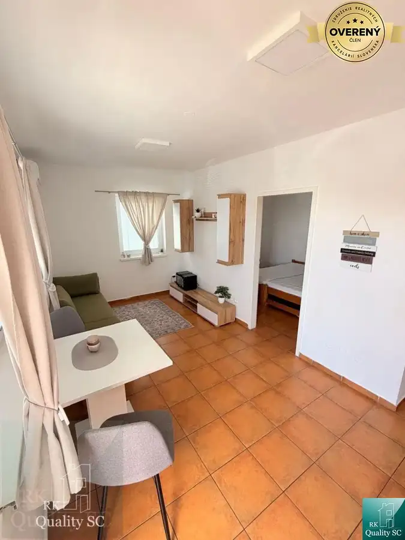
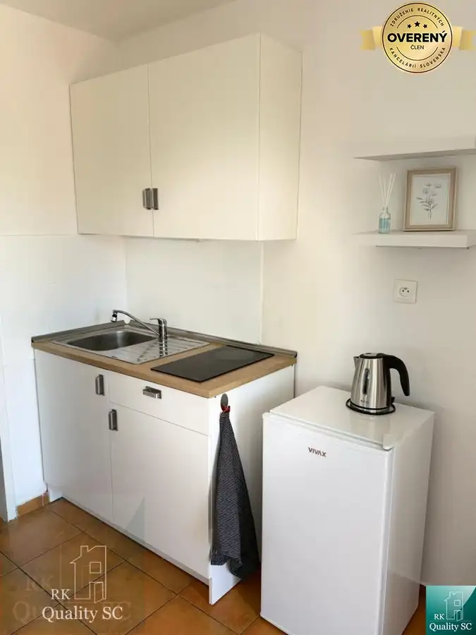
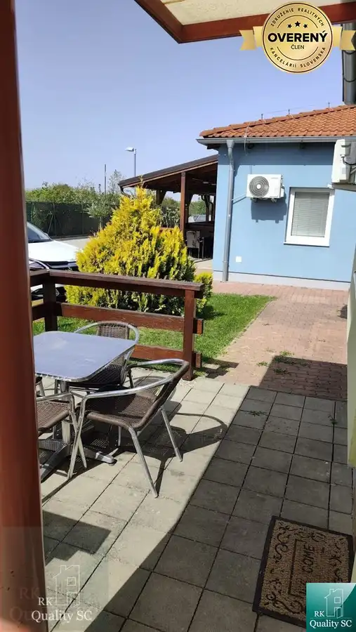
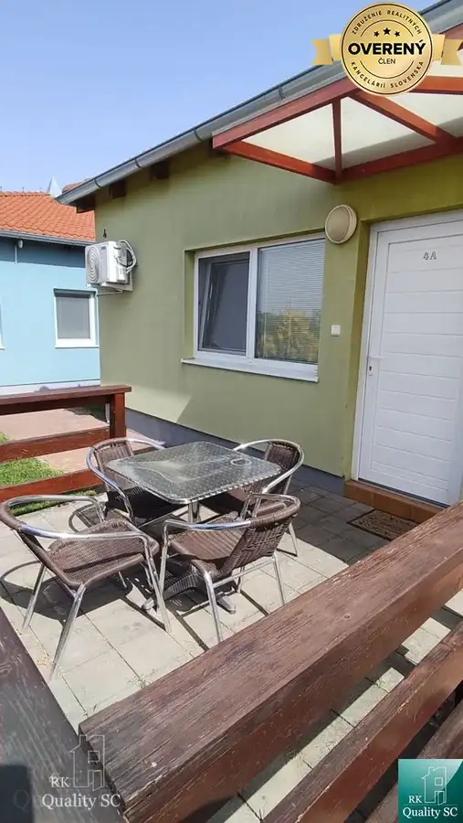
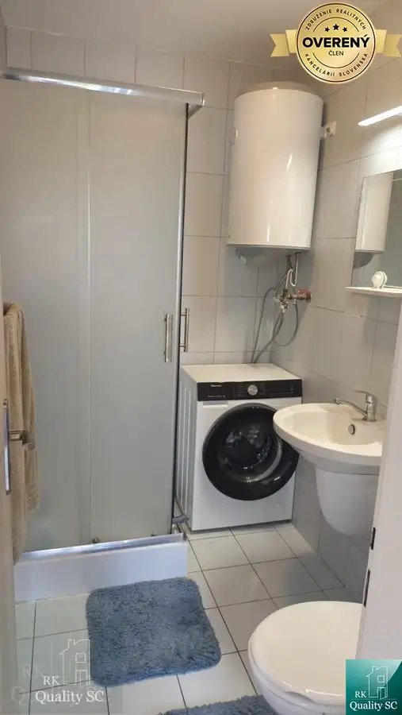

Slnečné jazerá - BOLDOG - NA PREDAJ - plnohodnotný 1 izbový byt v blíz
Boldog






- Dispozícia1-izbový
- Plocha30.54 m²
- Poschodie1.
- Stavúplne prerobený
- Vlastníctvoosobné
O nehnuteľnosti
Lokalita: obec Boldog - PRI SLNEČNÝCH JAZERÁCH SEVER.
Hľadáte pokojné bývanie blízko prírody, vody a zároveň na skok od centra Senca?
Tento príjemný 1 izb. byt v obci Boldog, v bezprostrednej blízkosti areálu Slnečných jazier v Senci, umiestnený v zástavbe Holiday Village môže byť presne to, čo hľadáte.
Byt s výmerou 30,54 m² sa nachádza na prízemí menšieho bytového domu iba so 4 bytovými jednotkami, čo prináša príjemnú komornú atmosféru a viac súkromia.
Byt sa predáva komplet zariadený, stačí si priniesť osobné veci.
Dispozícia bytu je praktická a efektívne využíva každý meter:
- kuchynka prepojená s obývacou časťou
- samostatná izba
- kúpeľňa s WC
- príjemná terasa o výmere 9 m², ktorá ponúka priestor na rannú kávu, posedenie s priateľmi či príjemný letný relax
- parkovacie státie, ktoré patrí k bytu, takže parkovanie máte pohodlne vyriešené priamo pri bývaní.
O komfort počas teplých dní sa postará klimatizácia.
A lokalita? Slnečné jazerá Sever máte na pár krokov. Ideálne miesto pre tých, ktorí chcú mať vodu, oddych a možnosti trávenia voľného času blízko domova, no zároveň ocenia dobrú dostupnosť do Senca.
Byt je vhodný ako štartovacie bývanie, útulné bývanie pre jednotlivca alebo pár, víkendové bývanie pri jazerách, investičná nehnuteľnosť na prenájom.
Neváhajte a dohodnite si obhliadku. Možno práve tu nájdete svoje nové miesto na bývanie, oddych alebo investíciu.
Cena domu: 125 000,-EUR (aj na HÚ).
Kontakt: Jana Donáthová, RK Quality SC, mobil , pevná linka , mail:
Zvyšujeme kvalitu služieb v našej Realitke Qualitke, bez zvýšenia našej odmeny:
• poskytujeme najvyššiu právnu ochranu pre svojich klientov formou autorizovaných Kúpnych zmlúv našou advokátkou
• podávame konania na kataster elektronicky (kratšia lehota na povolenie vkladov - namiesto do 30 kal. dní bude vklad povolený do 20 kal. dní pri štandardnom konaní a do 15 kal. dní pri zrýchlenom konaní)
• platíme všetky náklady súvisiace s autorizáciou Kúpnych zmlúv, s overením totožnosti predávajúcich (netreba chodiť k notárovi, či na matriku, pri autorizovaní KZ sa v našej kancelárii overia podpisy predávajúcich) a s povolením vkladu vlastníckeho práva na katastri (správne poplatky)
• Rezervačné zmluvy podpisujeme digitálne/online cez SIGNI (šetríme Váš čas, energiu, pohonné hmoty, parkovné…)
• „NÁŠMU KUPUJÚCEMU GARANTUJEME VRÁTENIE REZERVAČNÉHO POPLATKU V PLNEJ VÝŠKE V PRÍPADE, KEĎ MU NEZABEZPEČÍME FINANCOVANIE NEHNUTEĽNOSTI Z NAŠEJ PONUKY PROSTREDNÍCTVOM NÁŠHO HYPOPORADCU
• plus ďalšie benefity pre Vás
ZABEZPEČÍME VÁM VÝHODNÚ HYPOTÉKU A DOFINANCOVANIE TEJTO NEHNUTEĽNOSTI - ZDARMA (pretože nášho hypoporadcu platia banky) A PROMPTNE - vybavte všetko na jednom mieste, rýchlejšie a lacnejšie ako kdekoľvek inde. U NÁS NEPLATÍTE NÁKLADY ZA ZNALECKÝ POSUDOK A OSTATNÉ POPLATKY, ak využijete služby nášho hypoporadcu.
Navštíviť nás môžete osobne na adrese:
RK Quality SC, Lichnerova 25, 903 01 Senec - na pešej zóne - v obchodnom centre KOCKA (na prízemí - hneď pri ČSOB)
Parametre
- Úžitková plocha
- 30.54 m²
- Poschodie
- 1
- Vlastníctvo
- osobné
- Stav
- úplne prerobený
- Status
- aktívne
- Terasa
- áno
- Postavené z
- tehla
- Dátum zverejnenia
- 2026-09-13